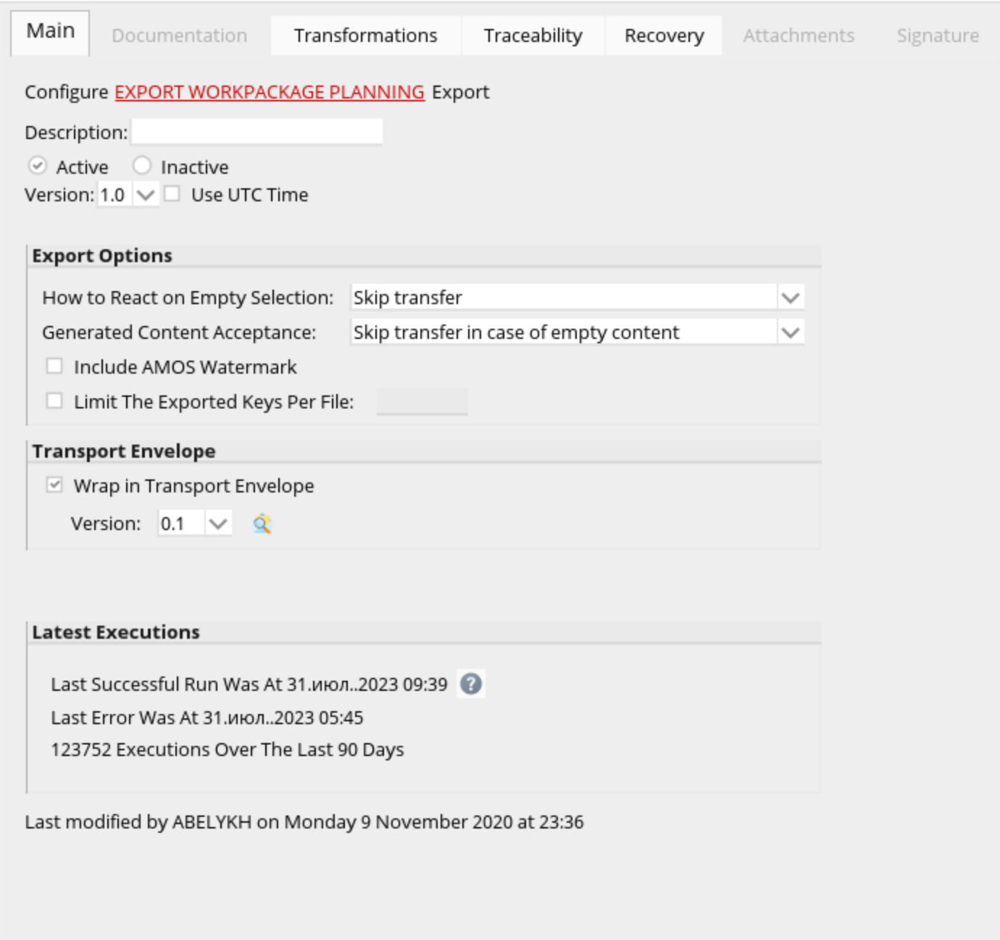
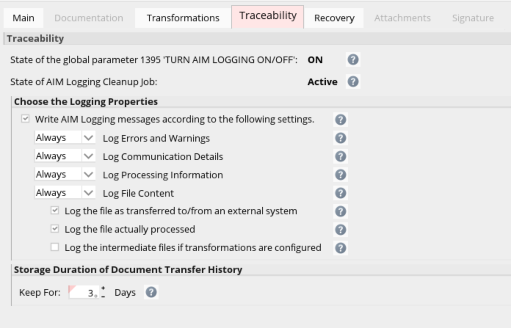
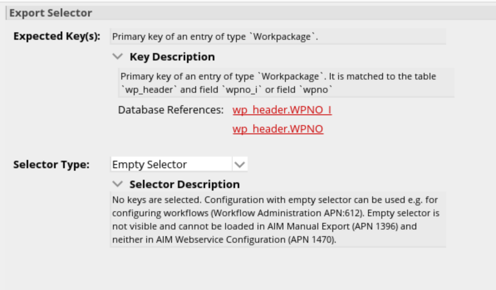
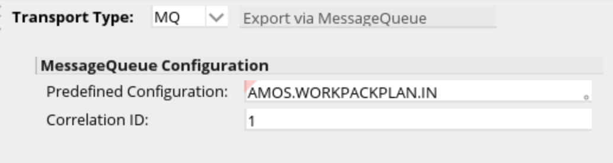
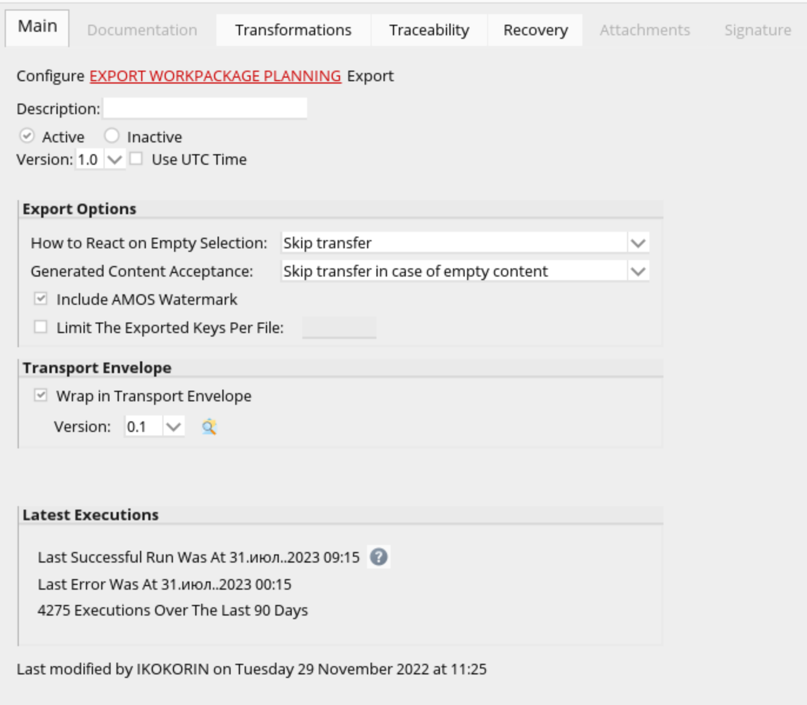
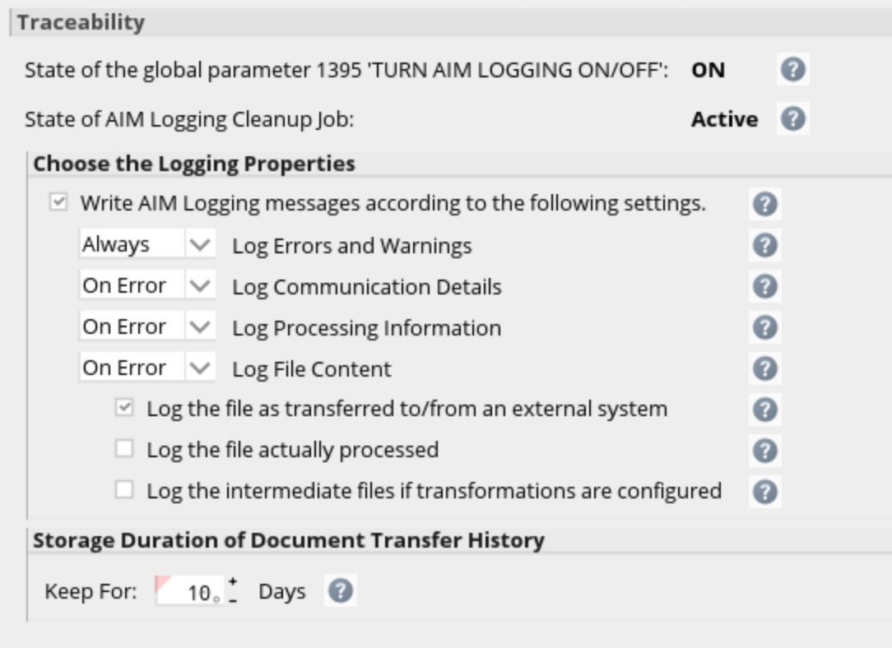
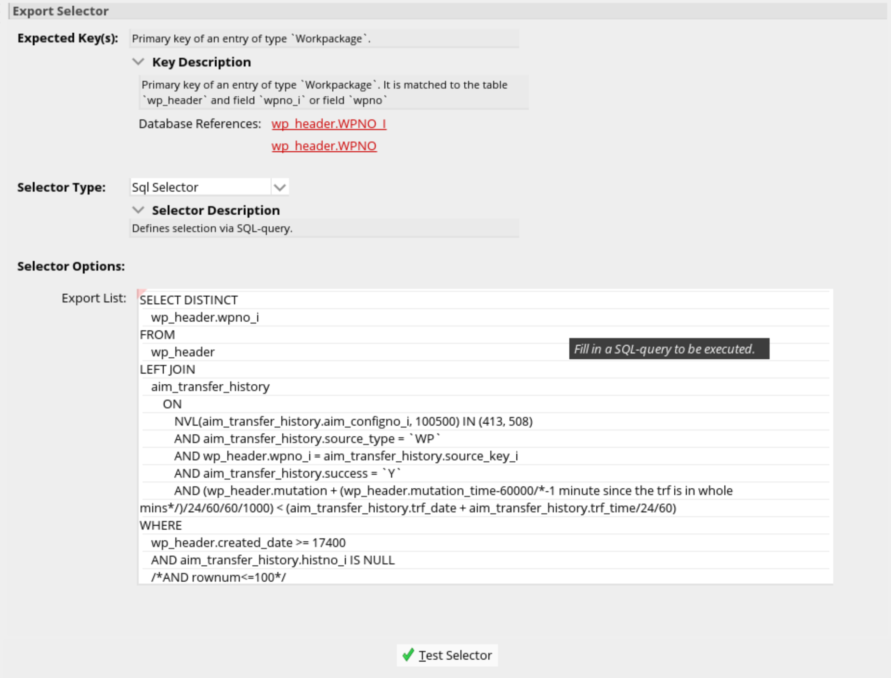

Created by Филипенков Никита Константинович, last modified on июл. 31, 2023
INTEGR-MAIN
В APN 1404 Main&Traceability
На вкладке MAINнеобходимо заполнить в соответсвии со скриншотом ниже:

На вкладке Traceability настроить в соответсвии со скриншотом ниже:

Настройка селектора в APN 1404
В Configuration Detail выбираем подвкладку selector и в окне Export Selector заполнить данные:

Настройка Transport в APN 1404
В Configuration Detail выбираем подвкладку transport и в главном окне заполнить данные:

SCHEDULER
В APN 1404 Main&Traceability
На вкладке MAINнеобходимо заполнить в соответсвии со скриншотом ниже:

На вкладке Traceability настроить в соответсвии со скриншотом ниже:

Настройка селектора в APN 1404
В Configuration Detail выбираем подвкладку selector и в окне Export Selector заполнить данные:

Ниже представлен SQL запрос для указания в Selector Options:
SELECT
DISTINCT wp_header.wpno_i
FROM wp_header
LEFT JOIN aim_transfer_history ON NVL(aim_transfer_history.aim_configno_i, 100500) IN (413, 508)
AND aim_transfer_history.source_type = 'WP'
AND wp_header.wpno_i = aim_transfer_history.source_key_i
AND aim_transfer_history.success = 'Y'
AND (wp_header.mutation + (wp_header.mutation_time-60000/*-1 minute since the trf is in whole mins*/)/24/60/60/1000) < (aim_transfer_history.trf_date + aim_transfer_history.trf_time/24/60)
WHERE
wp_header.created_date >= 17400
AND aim_transfer_history.histno_i IS NULL
/*AND rownum<=100*/
Настройка Transport в APN 1404
В Configuration Detail выбираем подвкладку transport и в главном окне заполнить данные:
{kind=link}
{kind=link}
{kind=link}
{kind=link}
{kind=link}
{kind=link}
{kind=link}